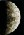
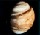
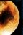
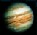
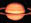
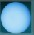
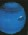
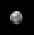

|  | Mercurio | |
|  | Venus | |
 | La Tierra | |
|  | Marte | |
|  | Jupiter | |
|  | Saturno | |
|  | Urano | |
|  | Neptuno | |
|  | Plutón | |
| Deja tu opinión | ||
JUPITER: EL GIGANTE
Lo que más impresiona del planeta son sus gigantescas dimensiones: en efecto, su volumen es 1300 veces superior al de la Tierra y su masa, equivalente a casi 318 masas terrestres, supera a la de todos los demás cuerpos del sistema solar juntos (excluido, naturalmente, el Sol).
Prototipo de la clase de los planetas gigantes gaseosos, no presenta una superficie sólida y emite más energía (un 70% más) de la que recibe del Sol, prueba de que en su interior actúa un potente mecanismo de generación de calor.
La rápida rotación del planeta determina un achatamiento evidente de los polos. De hecho, el radio polar es cerca de 4640 Km. más corto que el ecuatorial.
Tiene multitud de satélites, cuatro de ellos, descubiertos por Galileo en 1610, son auténticos mundos colmados de maravillas: Io y Europa tienen aproximadamente las dimensiones de nuestra luna, mientras que Ganímedes y Calisto son casi tan grandes como Mercurio.
El aspecto exterior de Júpiter, que al telescopio aparece de un amarillo resplandeciente, está dominado por la colorida atmósfera, surcada por zonas claras y bandas oscuras, que se alternan como franjas paralelas al ecuador. En el techo de las nubes más altas, formadas por cristales de amoníaco helado, el 90% de las moléculas atmosféricas son de hidrógeno, el 10% de helio, el 0.2% de metano, el 0.03% de amoniaco y sólo el 0.0001% de vapor de agua.
La dinámica del sistema climático de Júpiter se refleja en unas franjas latitudinales de colores, nubes atmosféricas y tormentas. Los patrones de nubes cambian en horas o días. La Gran Mancha Roja (de 30000 Km. de extensión), es una compleja tormenta que se mueve en sentido antihorario. En su contorno exterior, el material tarda en girar entre cuatro y seis días; cerca del centro, los movimientos son menores e incluso lo hacen en direcciones aleatorias. Un montón de otras pequeñas tormentas y remolinos aparecen a lo largo de las bandas nubosas.
Las emisiones Auroranas, similares a las auroras boreales de la Tierra, fueron observadas en las regiones polares de Júpiter. Las emisiones auroranas parecen estar relacionadas con material procedente de Io que cae en espirales sobre la atmósfera de Júpiter a lo largo de las líneas del campo magnético. Se han observado también relámpagos de luz sobre las nubes, similares a los súper relámpagos en las zonas altas de la atmósfera terrestre.